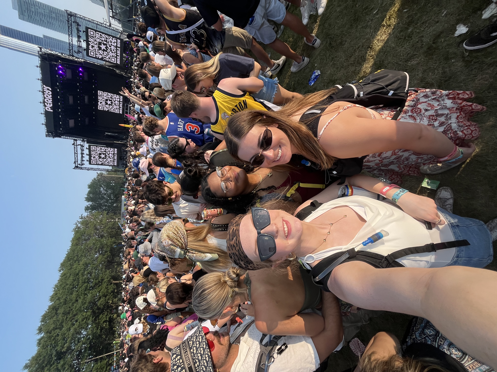
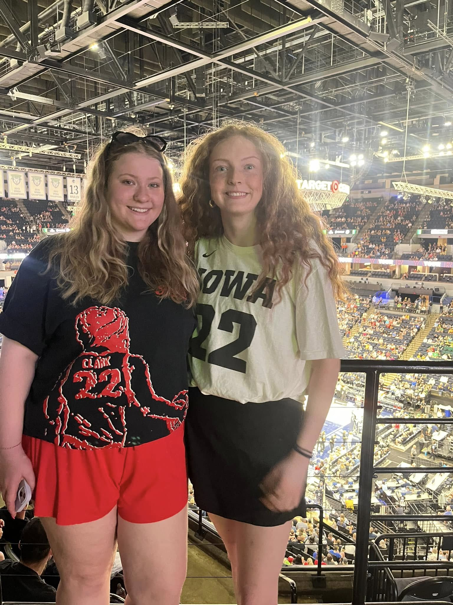

About Me!
Welcome! My name is Meghan, and this is my personal website for Digital Product Management. I am a senior at Iowa, majoring in Marketing and Business Analytics. I grew up in Oxford, Iowa, on a farm with three horses! I enjoy spending time with my friends and family, playing sports, and traveling! I have visited eight countries, including Germany, Italy, Hungary, Austria, and Greece, my favorite city being Paris, France. Recent travels have taken me to the Caribbean, and my next planned travels are to Toronto, ON, Canada.
Below you will see some images of my favorite activities!


Favorite Songs!
I enjoy all genres of music from all types of artists. Below are some of my favorites right now!
- Vicious by Sabrina Carpenter
- Raindance (feat. Tems) by Dave
- Music is Better by Rufus Du Sol
- American Girls by Harry Styles
- Basic Being Basic by Djo
- Honey by Taylor Swift
Meghan's Hobbies!
Golfing
When the weather permits, I enjoy going golfing with my dad and friends. This is a newer hobby of mine but I have enjoyed learning all there is to know about golf!
Watching movies
Some of my favorites are....
- Little Women (2019)
- La La Land
- Challengers
- The Greatest Showman
Trying new resturants
My friends and I have made it a mission to try all resturants in Iowa City before graduation. Our current favorite is Pullman!